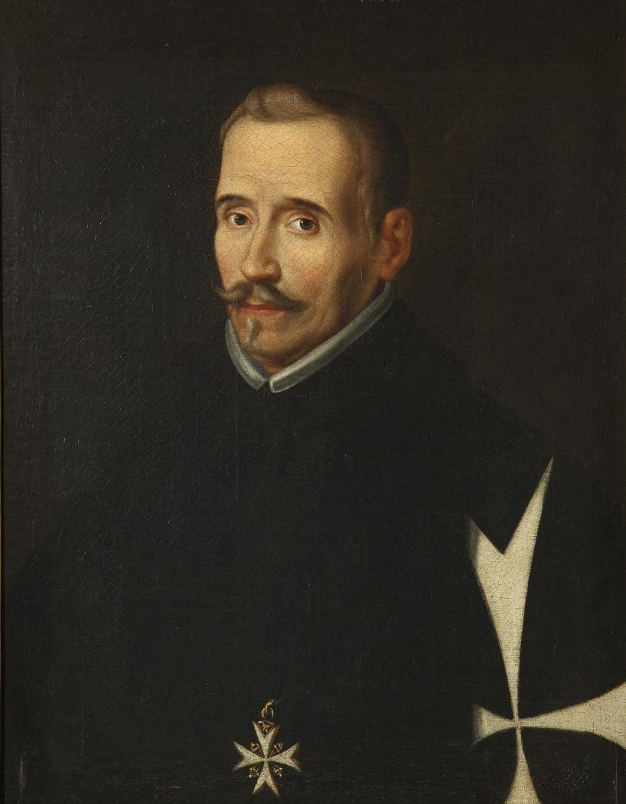

The Lope de Vega Project
The Lope de Vega Project examines a selection of texts available in the public domain by early modern Spanish playwright Félix Lope de Vega y Carpio (1562-1635). A figure comparable to Shakespeare, Lope de Vega wrote approximately 500 plays, of which some 300 survive. The project goal is to re-evaluate Lope's famous roles for women with computational methods. The visualizations on the site address the comparative participation of male and female characters across several plays. More importantly, the reading views and visualizations aim to assess the thematic differences in speech attributed to male versus female speakers. The site attempts to identify and compare references to emotion, gender, the body, family, honor, money, geography, and the names of historical and fictional people in several different plays drawn from a variety of subgenres.